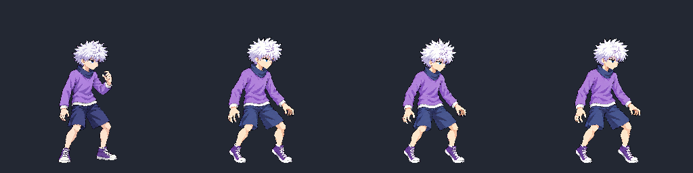
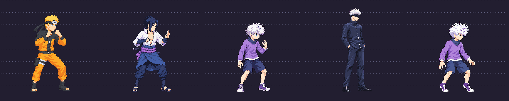
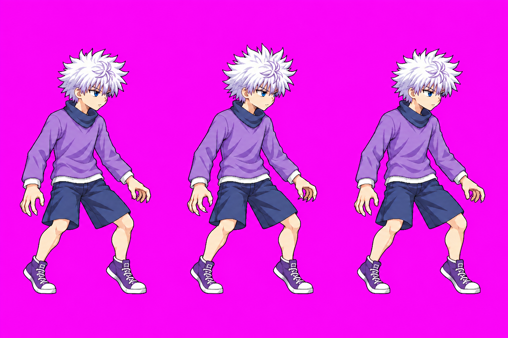
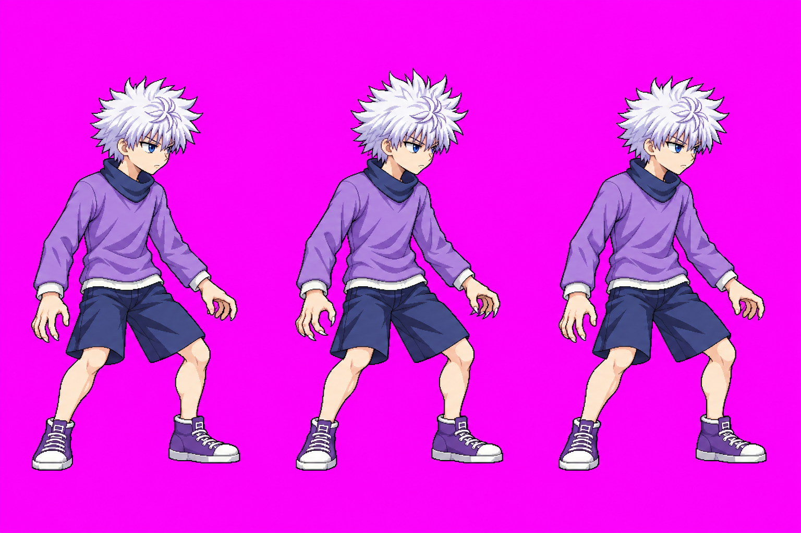

User-approved2026-10-10. Integration pending. Raised-heel, low ready stance; relaxed open claw hands, white hair bristling, no lightning baked into the body.
All three frames place the toes on y240. Heights including hair: 186/185/185px, matching the approved idle loop's 186px maximum. Bottom foot spans vary by 2px across the loop; crown landmarks under the hair remain estimates. Strict atlas: 42 animations, 175 frames, 48 colors; no new warning or clipping. Existing KO margin warning is unchanged.
Frame 0


Detailed QA · Anatomy sidecar · Strict pack · Test lab: Ultimate activation · Game preview
